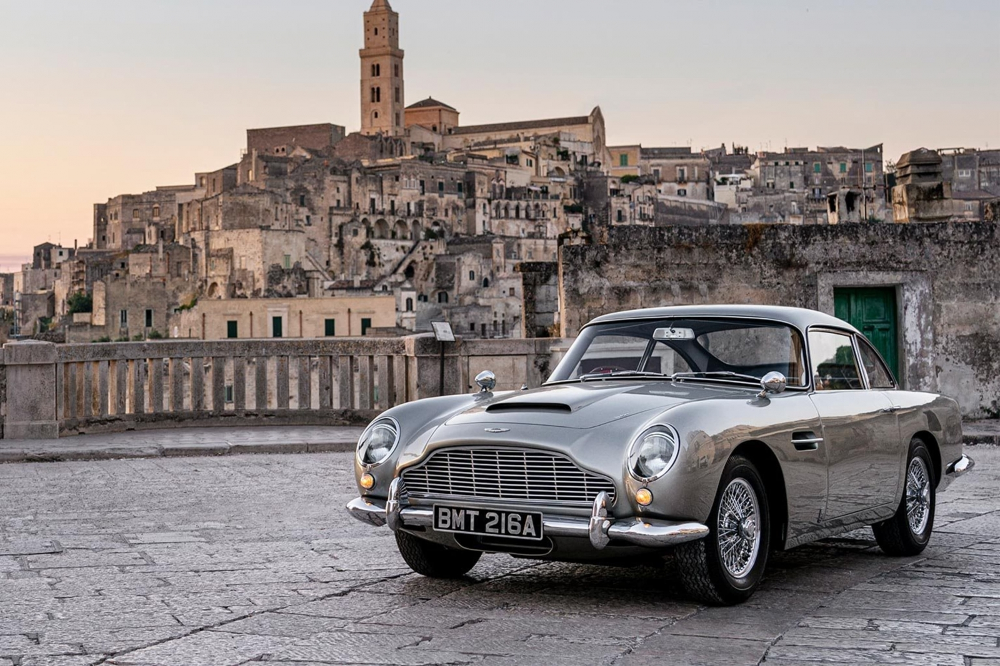
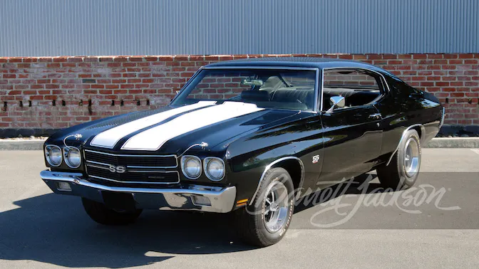
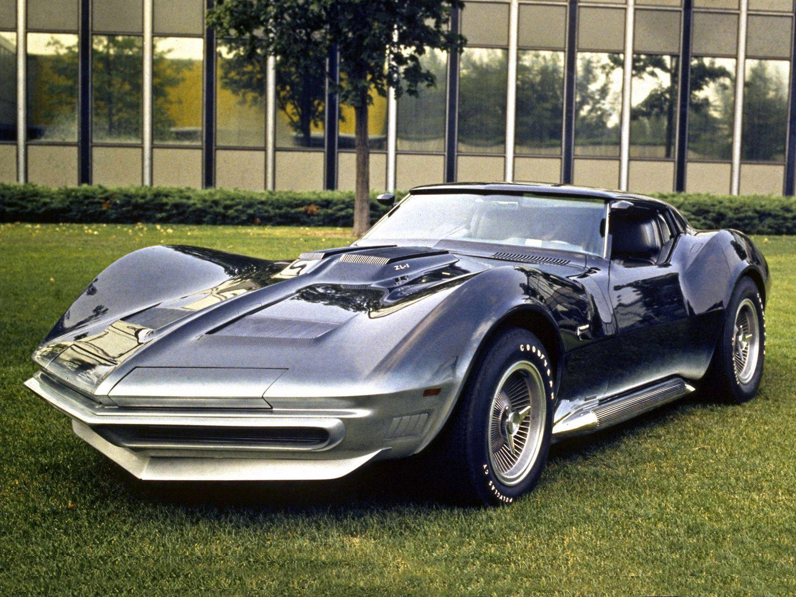
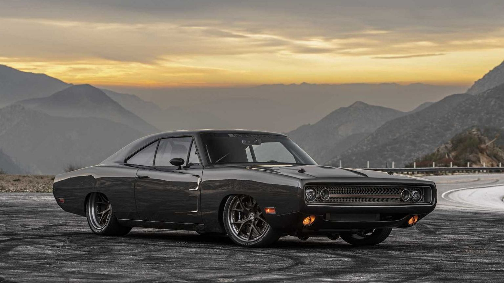
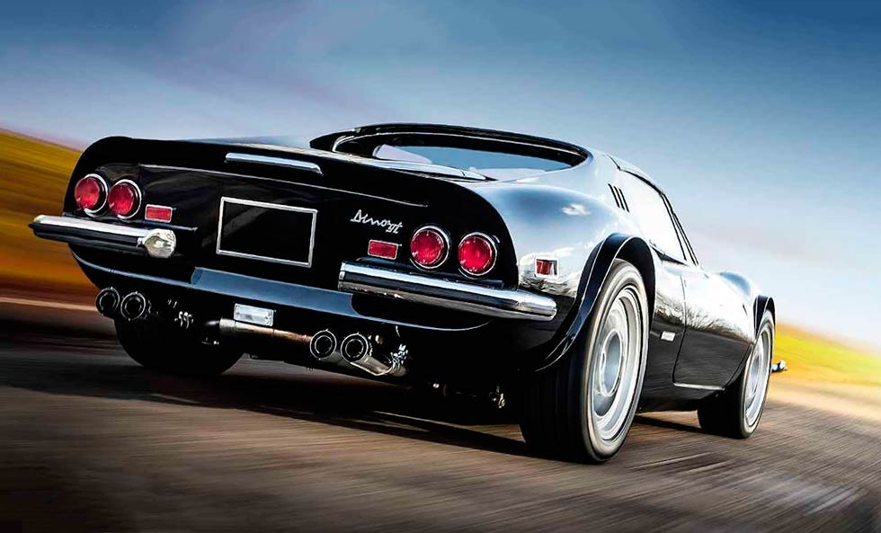
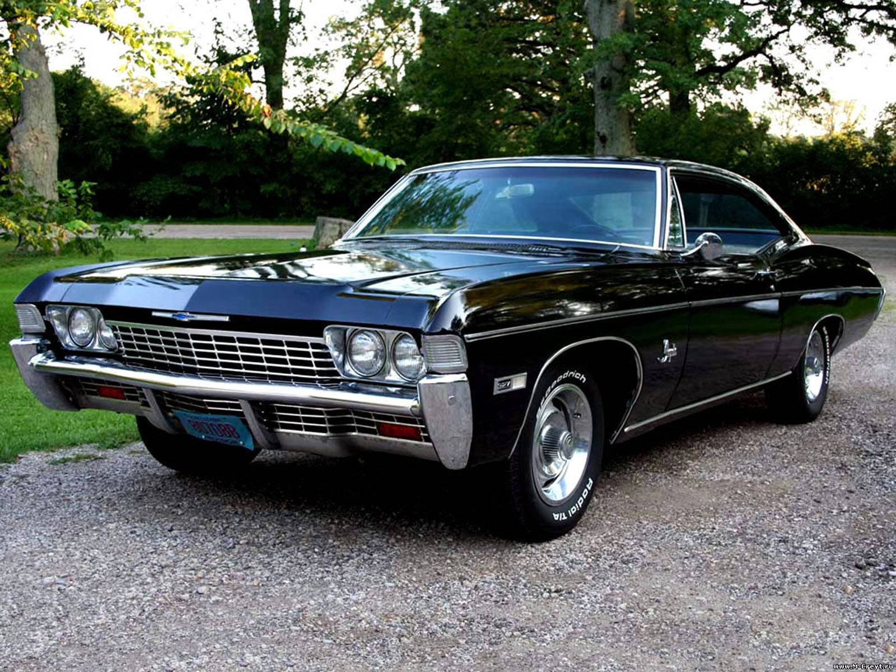
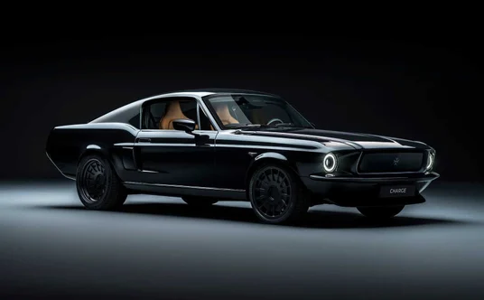
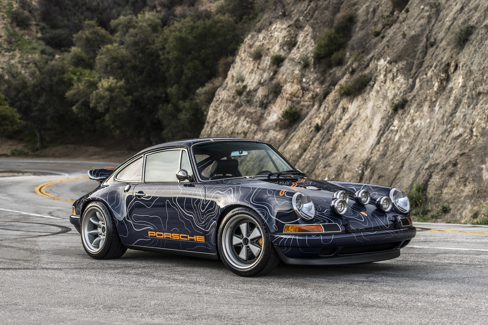

Aston martin
Aston Martin DB5 — автомобиль класса GT, выпускавшийся с 1963 по 1965 год английской компанией Aston Martin. Аббревиатура «DB» происходит от инициалов Дэвида Брауна, владельца компании в 1947—1972 годах. Модель известна как один из автомобилей Джеймса Бонда. Всего был выпущен 1021 экземпляр модели DB5.
Chevrolet SS
Super Sport, или SS, является фирменным пакетом опций производительности, предлагаемым Chevrolet на ограниченном количестве своих автомобилей. Все модели SS поставляются с отличительной маркировкой «SS» на экстерьере. Пакет SS был впервые выпущен для Impala 1961 года
Chevrolet Corvette
Chevrolet Corvette (C3) — спортивный автомобиль, который выпускался с 1967 по 1982 год компанией Chevrolet с 1968 по 1982 модельный год. Двигатели и компоненты шасси были в основном перенесены с предыдущего поколения, но кузов и интерьер были новыми. Он установил новые рекорды продаж с 53 807 произведенными за 1979 модельный год. [6] C3 является третьим поколением Chevrolet Corvette и знаменует собой второй раз, когда Corvette будет носить имя Stingray, хотя только для 1969 - 1976 модельных годов. На этот раз это было одно слово, в отличие от Sting Ray, используемого для поколения C2 1963 - 1967 годов. Затем название будет удалено до 2014 года, когда оно вернется с выпуском C7.


Chevrolet Impala
Chevrolet Impala — полноразмерный автомобиль, построенный компанией Chevrolet с 1958 по 1985, с 1994 по 1996 и с 2000 по 2020 год. Impala была популярным флагманским легковым автомобилем Chevrolet и была одним из самых продаваемых автомобилей американского производства в Соединенных Штатах. [7][8] Для своего дебюта в 1958 году Impala отличалась от других моделей симметричными тройными задними фонарями. Chevrolet Caprice был представлен как топовый спортивный седан Impala для 1965 модельного года, позже став отдельной серией, расположенной выше Impala в 1966 году, которая, в свою очередь, осталась выше Chevrolet Bel Air и Chevrolet Biscayne. Impala продолжала оставаться самой популярной полноразмерной моделью Chevrolet до середины 1980-х годов. Между 1994 и 1996 годами Impala была пересмотрена как 5,7-литровая версия седана Chevrolet Caprice Classic с двигателем V8.


